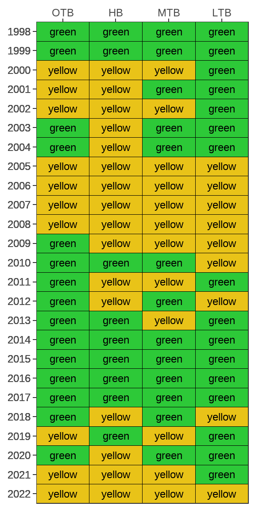

FW-5
Continue and expand the critical fisheries monitoring program
OBJECTIVES:
Continue the Fisheries Independent Monitoring program to evaluate the status and trends of fisheries in Tampa Bay; secure long-term supplemental funding to enhance monitoring in rivers and tidal streams; and assess the relative importance of various estuarine habitat types to recruitment processes and fisheries productivity.
STATUS:
Ongoing. Continue to support program funding. Action expanded to support long-term monitoring in rivers affected by water withdrawals; representative tidal creeks through the watershed; and research into early life histories of economically important fisheries.
BACKGROUND:
The Florida Fish and Wildlife Conservation Commission’s (FWC) Fish and Wildlife Research Institute conducts an ongoing Fisheries Independent Monitoring program (FIM) that evaluates the status and trends of fisheries in Tampa Bay. This program is a key component of overall bay monitoring. The FIM program employs multiple fishing gear types to determine the abundance and distribution of adults and juveniles of a number of fish species. Each month, 108 samples are collected at randomly selected sites stratified by habitat and depth across five bay zones and four river zones of Tampa Bay. Surveys record the number, species and length of fish captured, and other environmental parameters.

The FIM program’s estuarine sampling is funded by state saltwater fishing license revenues and by federal dollars from the Sport Fish Restoration Fund. FIM program funding often is supplemented by grants awarded from other agencies, such as Tampa Bay Water, Southwest Florida Water Management District and Tampa Bay Estuary Program. In the 2014–2015 fiscal year, estuarine sampling in Tampa Bay operated on roughly $700,000, which included about $80,000 in supplemental, grant funded sampling.
A comprehensive hydrobiological monitoring program (HBMP) to assess potential impacts of new surface water withdrawals for regional drinking water supplies ended in 2012 in the Hillsborough River and Palm River/McKay Bay, and in 2014 in the Alafia River. While sampling further upstream did not detect impacts to fisheries from freshwater withdrawals during the study period, it was valuable for characterizing these systems and contributed to a better overall picture of the status of bay fisheries. Additional fisheries sampling in the Hillsborough River will be initiated in 2024.
Continued monitoring of changes to the system or water withdrawals is warranted. Tampa Bay Water’s current water use permits expire in 2030 for Palm and Hillsborough Rivers and 2032 for Alafia River. Fisheries monitoring for the tidal portions of the Alafia, Braden, Little Manatee and Manatee Rivers will continue under the ongoing FIM program. However, long-term sources of funding for fisheries monitoring of the Hillsborough River and the Tampa Bypass Canal are needed; these data will be important for periodic reevaluations of minimum flows and levels.
Ongoing work by TBEP and multiple other partners (Janicki Environmental and Mote Marine Laboratory 2020) has established and reinforced the importance of minor tidal tributaries to the bay (see Action BH-9). In 2013–2014, a regional study was conducted on 16 creeks from Hillsborough to Collier County. Together, these data paint the most comprehensive portrait yet of the tidal patterns, shoreline vegetation, fish populations and nutrient levels in Gulf Coast tributaries and are available on the TBEP Tidal Creeks Dashboard.
Janicki Environmental and Mote Marine Laboratory. 2020. “Southwest Florida Tidal Creeks: Nutrient Management Framework and Indicator Development.” 02-20. St. Petersburg, Florida: Tampa Bay Estuary Program. https://drive.google.com/file/d/1n4okSVtNSswVXv1Lje-qMopNZdvUrQnt/view?usp=drivesdk.
Minor tidal tributaries are critical as “food factories” as well as nursery habitat for fish, possibly providing keystone prey species not as readily available in mainstem rivers and nearshore bay areas. Monitoring and management of both are important. Tidal creek monitoring needs long-term funding. The estimated annual funding requirement is $70,000, based on the collection and processing of 6 samples per creek for 10 creeks and 4 sampling events per year. This information will be used to develop criteria for healthy, balanced creeks that can continue to serve as natural incubators for sportfish.
Tidal creek research reinforces the need to learn more about the early life history of recreationally and commercially important fish and shellfish in Tampa Bay. Questions about egg and larval distribution, mortality rates and key habitats used by different species at various life stages deserve closer examination. This information is crucial to assessing the relative threats posed by various impacts — from commercial harvest to power plant intakes to long-term sea level rise — and identifying future restoration priorities.

In light of the 2010 Deepwater Horizon oil spill in the Gulf of Mexico, there is renewed urgency and opportunity for improving our understanding of how important offshore fisheries species, such as grey snapper and gag grouper, use the full reach of the estuary for critical portions of their life-history. While the important role of the estuary in sustaining offshore adult populations is well documented, long-term, broad-scale monitoring studies are needed to assess the relative importance of various estuarine habitat types to recruitment processes and fisheries productivity (see Actions BH-8 and BH-9).
TBERF funded studies by FWRI in 2019 and 2021 used complementary hook-and-line and baited remote underwater video (BRUV) systems to sample fish communities of Tampa Bay’s estuarine hard bottom habitats (Flaherty-Walia et al. 2021). Use of hard bottom habitat was documented for a variety of economically important species and by unique fish assemblages within the estuary supporting the idea that Tampa Bay hard bottom habitats function as a link between estuarine seagrass nurseries and offshore reefs.
Flaherty-Walia, K. E., B. J. Williams, B. Barbara, M. N. Schrandt, S. F. Keenan, D. Lazarre, J. L.Vecchio, et al. 2021. “Fish Assemblages Associated with Seagrass and Hard Bottom Habitats Within Tampa Bay and Neighboring Offshore Reefs: Habitat Connectivity and Potential Effects of the Severe 2018 Red Tide Event.” 08-21. St. Petersburg, Florida: Tampa Bay Estuary Program. https://drive.google.com/file/d/11x24Ypp750SXHIIfF7U1edbBi6cNleTH/view?usp=sharing.
A 2019 study evaluated sportfish habitat at restoration sites at Rock Ponds, Terra Ceia, and Cockroach Bay and found fisheries benefits of ecosystem restoration comparable to natural sites. An ongoing sportfish tagging study at Robinson Preserve will help determine the extent to which the habitat restoration contributes juvenile sport fish to adult populations in the greater Tampa Bay area.